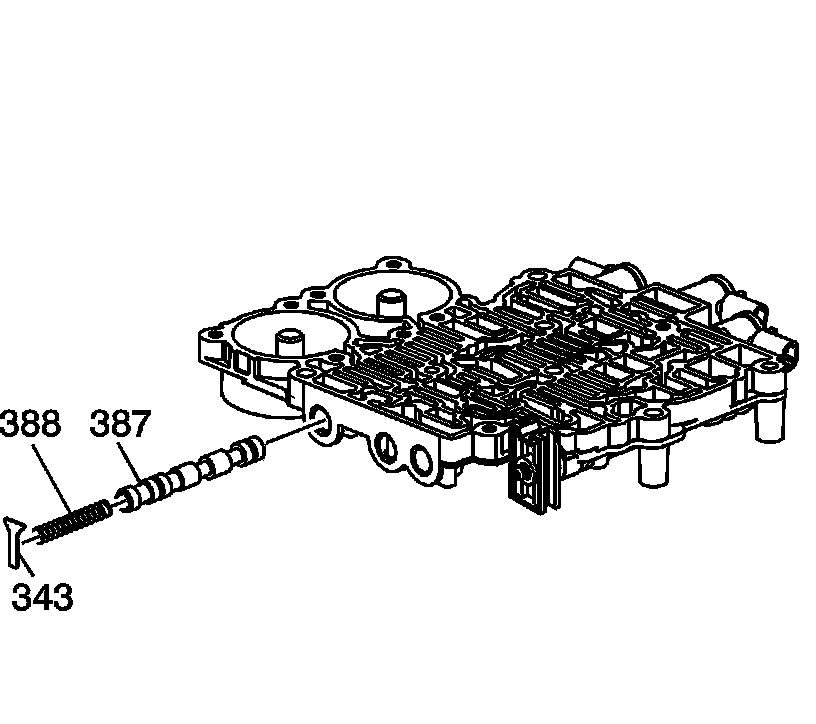
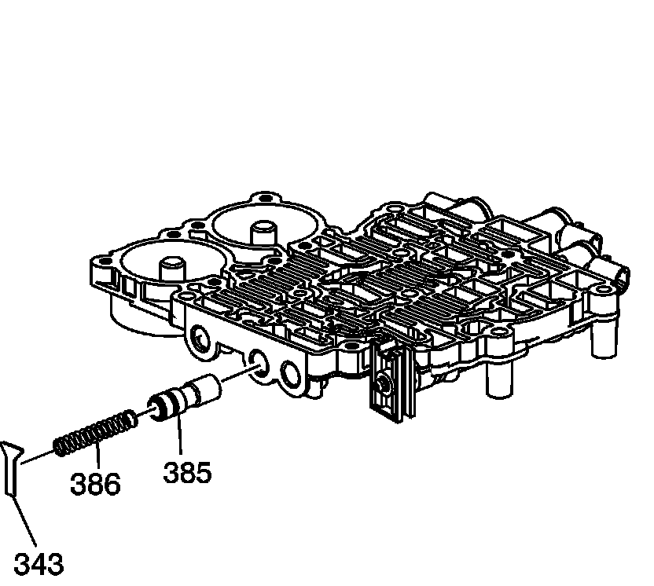
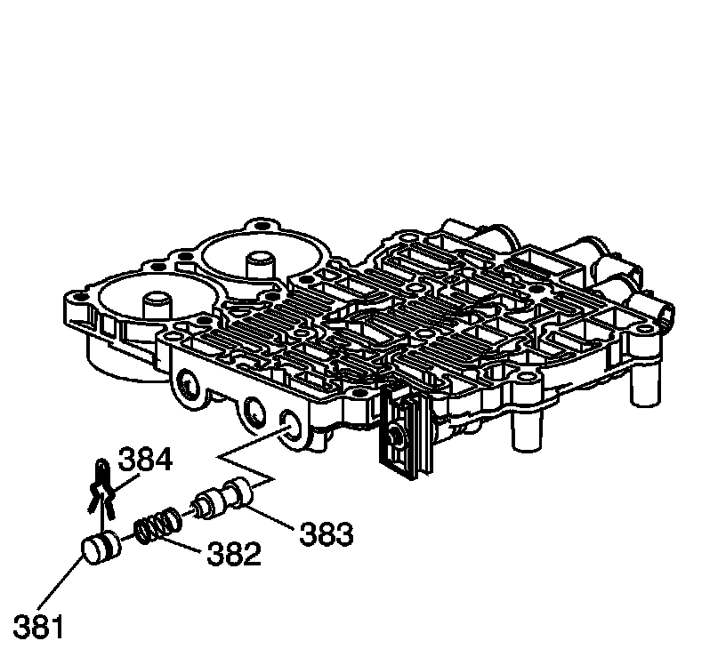
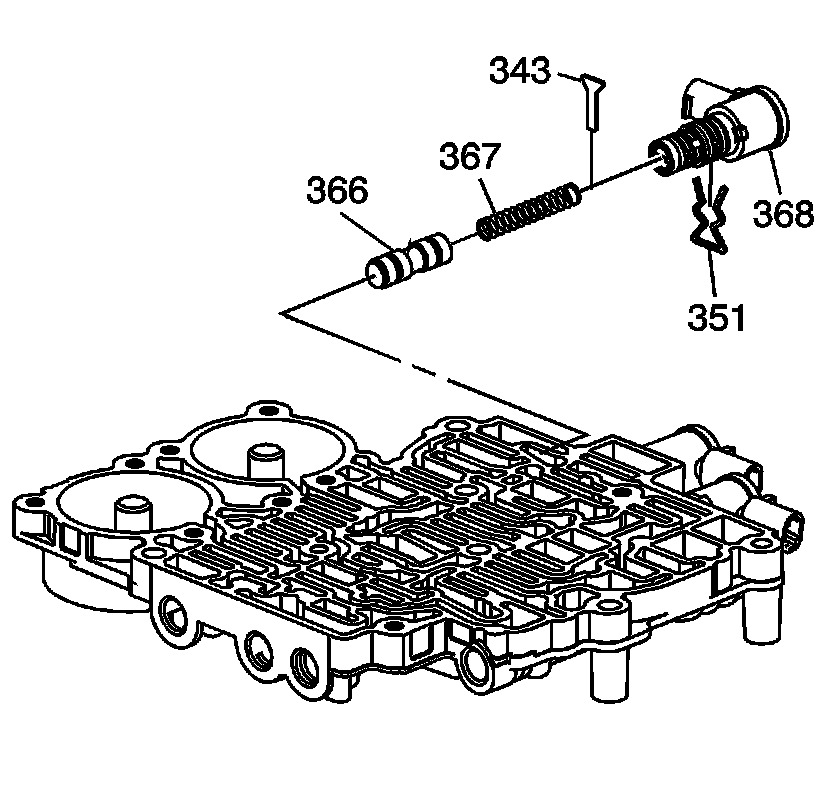
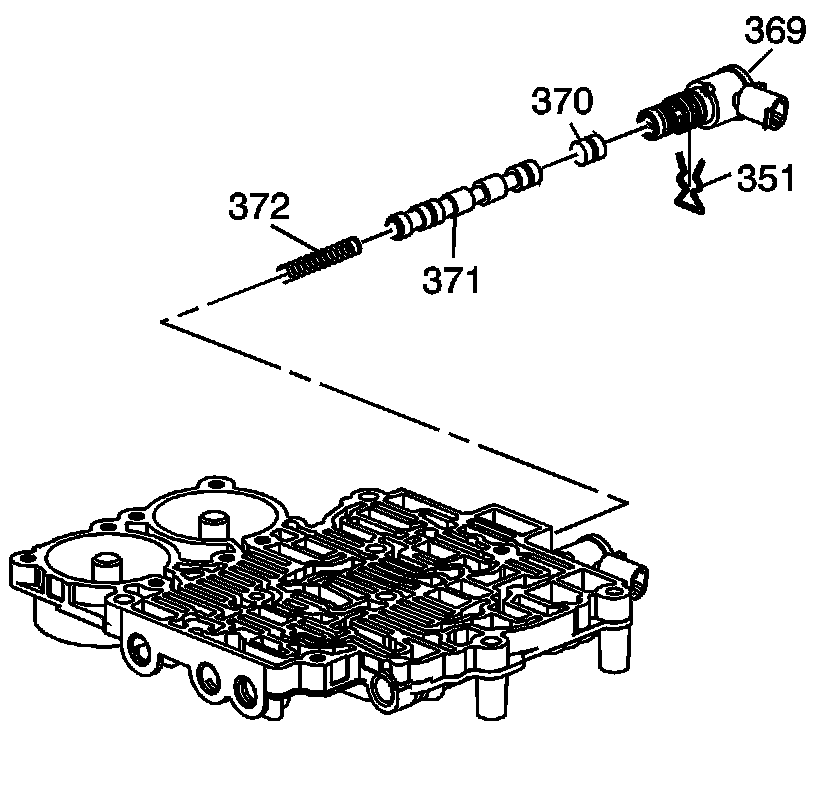
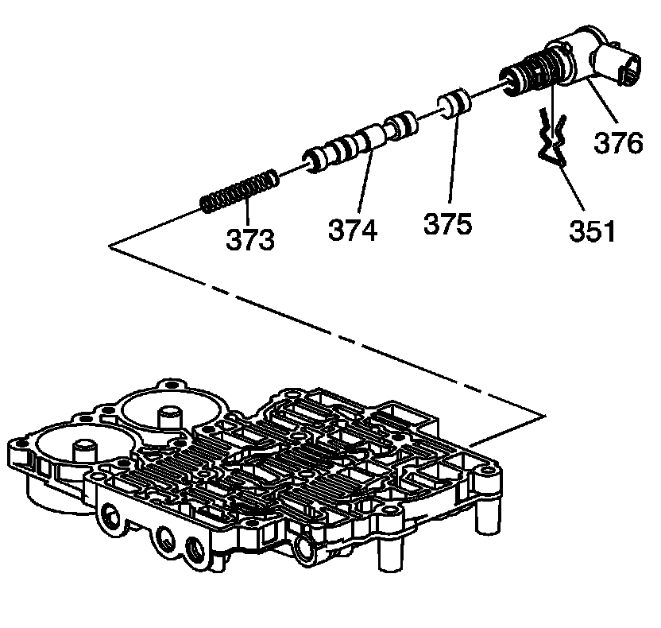

Control Valve Rear Body Disassemble
Control Valve Rear Body Disassemble

1. Remove the 1-2 shift valve retainer (343).
2. Remove the 1-2 shift valve spring (388).
3. Remove the 1-2 shift valve (387).

4. Remove the reverse lock out valve retainer (343).
5. Remove the reverse lock out spring (386).
6. Remove the reverse lock out valve (385).

7. Remove the low pressure control valve bore retainer (384).
8. Remove the bore plug (381).
9. Remove the low pressure control valve spring (382).
10. Remove the low pressure control valve (383).

11. Remove the manual valve link retainer (380).
12. Remove the manual valve link (379).
13. Remove the manual valve link retainer (378).
14. Remove the manual valve (377).

15. Remove the 1-2 shift solenoid retainer (351).
16. Remove the 1-2 shift solenoid (368).
17. Remove the 1-2 shift control valve retainer (343).
18. Remove the 1-2 shift control valve spring (367).
19. Remove the 1-2 shift control valve (366).

20. Remove the 2-3 shift solenoid retainer (351).
21. Remove the 2-3 shift solenoid (369).
22. Remove the 2-3 shift control valve (370).
23. Remove the 2-3 shift valve (371).
24. Remove the 2-3 shift valve spring (372).

25. Remove the 4-5 shift solenoid retainer (351).
26. Remove the 4-5 shift solenoid (376).
27. Remove the 4-5 shift control valve (375).
28. Remove the 4-5 shift valve (374).
29. Remove the 4-5 shift valve spring (373).